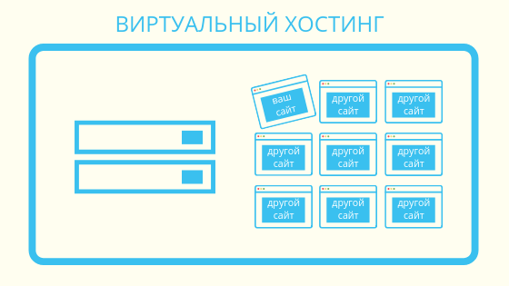

Виртуальный хостинг - это услуга хостинга, при которой несколько пользователей арендуют хостинг на одном сервере. Он может быть применен к отдельным физическим серверам, виртуальным частным серверам или облачным вычислениям. Главная особенность заключается в том, что несколько пользователей разделяют один физический сервер. Каждый пользователь получает свою собственную виртуальную среду, в которой может хранить свои файлы и управлять своими сайтами и приложениями. Однако ресурсы, такие как CPU, RAM и дисковое пространство, также разделяются между ними. В результате, если один пользователь использует слишком много ресурсов, это может негативно сказаться на производительности других проектов.
Для обслуживания сайтов используется протокол HTTP, который передаёт URL в составе запроса. Это позволяет сервису понять, к какому именно сайту обращается браузер или иная клиентская программа. В процессе настройки необходимо привязать домен к нужному IP-адресу, отредактировав в конфигурации корневой каталог. Ключевое преимущество виртуального хостинга – это экономия ресурсов и денежных средств, поскольку многие сайты могут работать на одной общей физической машине, используя одну и ту же конфигурацию системы и приложений. В качестве примера представим человека, который хочет создать несколько веб-страниц на различные темы, такие как музыка, кино, спорт и т.д. Виртуальный хостинг может стать лучшим решением, поскольку позволяет создать все эти веб-страницы на одном сервере и тем самым сэкономить деньги. Кроме того, они могут использовать существующую инфраструктуру, которая может включать в себя операционные системы Linux или Windows, язык программирования и базы данных MySQL.
Однако в некоторых редких случаях виртуальные хостинги могут иметь определенные ограничения. Например, ограниченное пространство для хранения данных или объём памяти в связи с их многопользовательским статусом. Ещё одним недостатком считается риск замедления работы в пиковое время, когда наблюдается высокая активность других веб-сайтов, использующих тот же сервер. Кроме того, если один сайт будет заражен, то все остальные размещенные на сервере сайты тоже окажутся под угрозой, поэтому важно принять меры для обеспечения безопасности виртуального хостинга, чтобы предотвратить возможный ущерб.
В целом виртуальный хостинг рассматривается многими компаниями как удобный и экономически эффективный способ развёртывания сайтов в сети Интернет.
